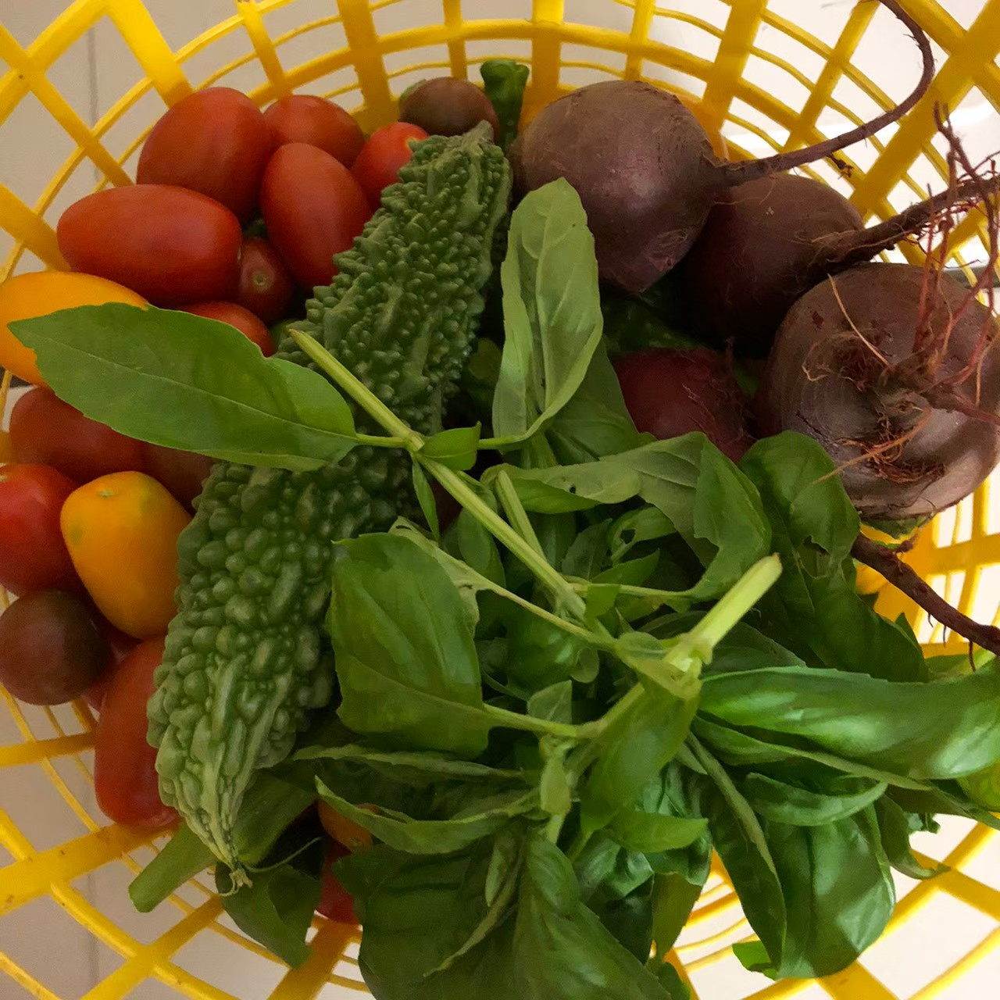
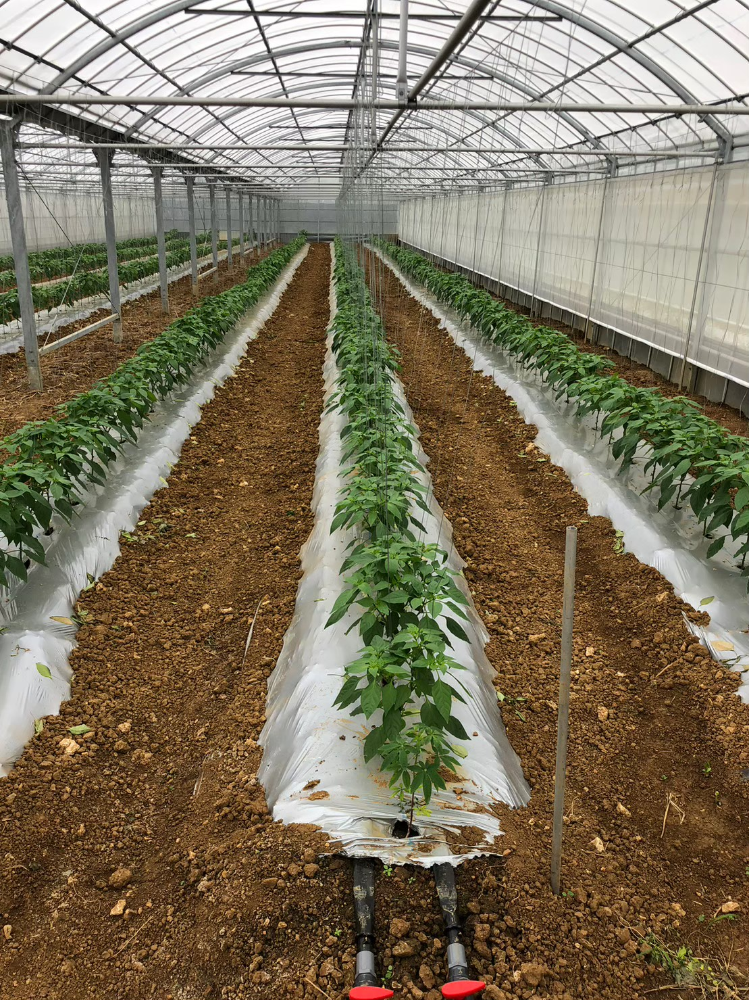
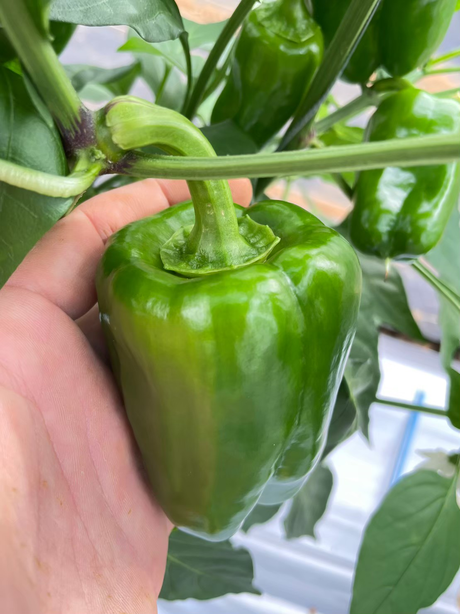
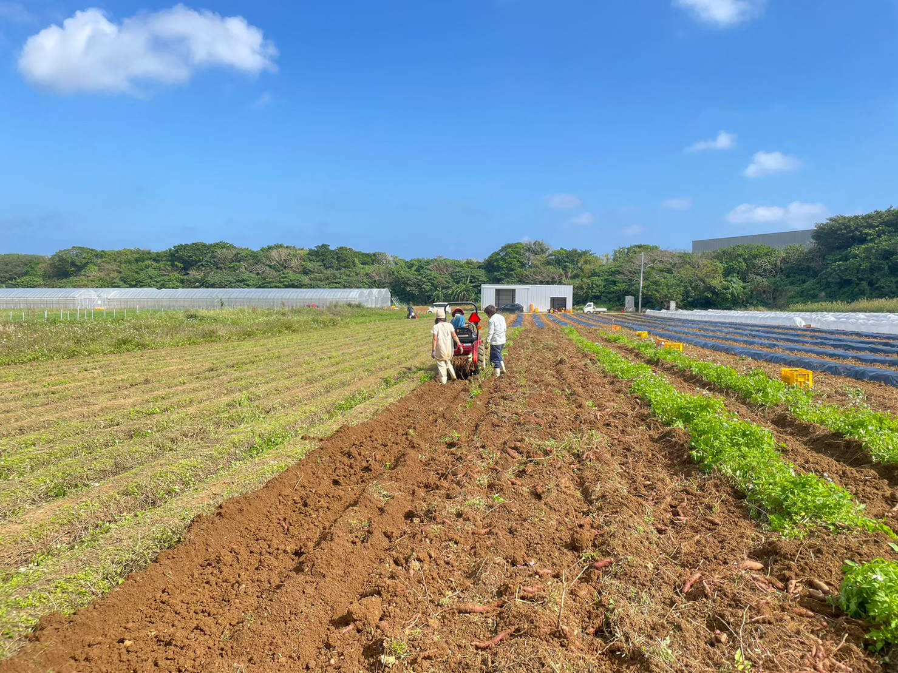

About Us
南の島で、
手をかけて育てる。
石垣島の強い日差し、海風、雨のリズム。株式会社GYは、その土地らしさを大切にしながら、野菜と果物の状態を見て一つひとつ手を入れています。
商品だけでなく、つくり手や畑の背景まで伝わるように。日々の仕事をていねいに積み重ね、島の恵みをまっすぐ届けます。


Products
旬のおすすめ
畑の状況に合わせて、今おすすめしたい農産物を紹介します。

太陽と風が育てる、
島の恵み。
Farm Story
畑の表情を、
毎日見る。
天候や土の湿り気、葉の色、実の張り。小さな変化を見逃さないことが、安定した味につながります。
- Location
- 沖縄県石垣市 宮良
- Focus
- 野菜・果物の栽培
- Style
- 自然に寄り添う、丁寧な栽培
Members
つくり手
石垣島の自然とともに、日々畑に向き合うつくり手たちをご紹介します。

Farm Visit
畑の見学について
見学をご希望の場合は、事前にお問い合わせください。収穫や天候の都合に合わせて、無理のない日程をご案内します。
所在地
〒907-0243 沖縄県石垣市宮良 XXX-XXX
見学時間
9:00 - 17:00（要予約）
農作業の状況により調整させていただきます。
アクセス
新石垣空港から車で約25分
駐車スペースあり（事前にお知らせください）
〒123-4567 沖縄県石垣市宮良 XXX-XXX